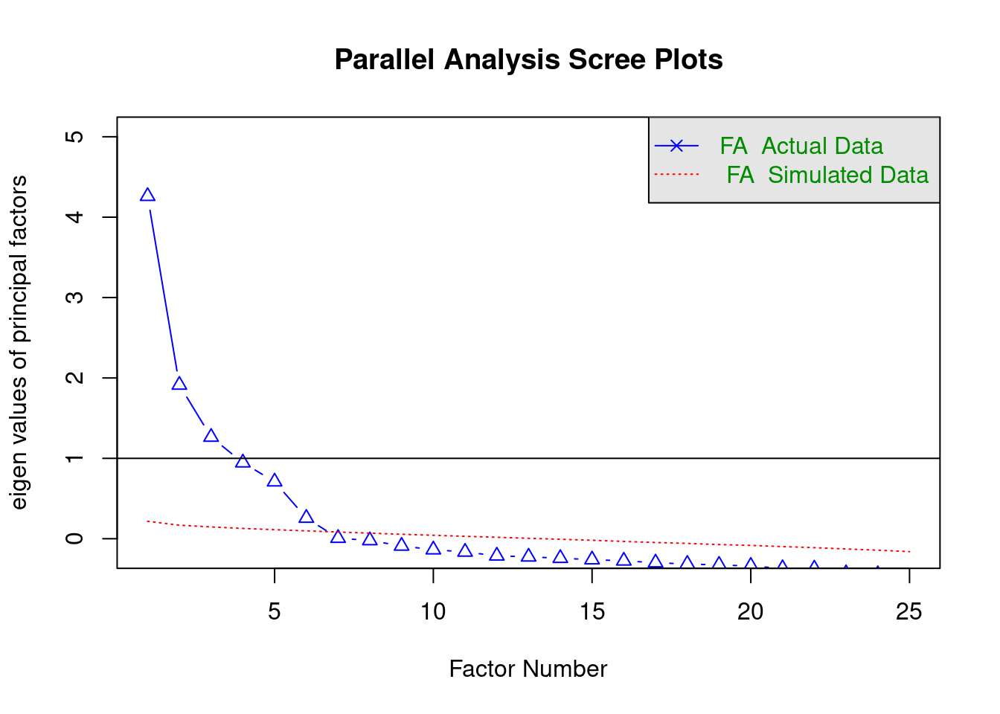

Chapter 11 Structural Equation modelling with lavaan
There are several packages for R which allow you to estimate Structural Equation Models (SEM), including sem (Fox, Nie, and Byrnes 2022), OpenMx (Boker et al. 2022), and lavaan (Rosseel, Jorgensen, and Rockwood 2022). Here, we will focus solely on lavaan.
11.1 Lavaan
The name “lavaan” stands for “latent variable analysis”. It is a package which can estimate a wide-variety of SEM models, including path models without latent variables. It has a convenient and intuitive syntax to define SEM models and it is actively developed. That is why it has perhaps become the go-to R package for SEM analysis. Although the help files in the R package are not overly comprehensive, the lavaan website has a useful tutorial, and I suggest you check this out.
11.1.1 The lavaan model syntax
In lavaan, SEM models can be specified via model formula’s similar to those used in the lm() and glm() functions. However, there are some new operators (relational symbols) used to define (residual) covariances, and latent variables. The table below lists some common expressions in the lavaan syntax.
| Formula | Description |
|---|---|
v =~ y |
latent variable v is defined and measured by y |
v =~ y1 + y2 + y3 |
latent variable v is defined and measured by y1, y2, and y3 |
v =~ 1 + y1 + y2 + y3 |
latent variable v is defined and measured by y1, y2, and y3, with the inclusion of an explicit intercept 1 to model the mean of v |
y ~ x |
y is regressed on x, i.e. a causal relation from x to y |
y ~ b*x |
y is regressed on x, with the slope of x labelled as b |
y ~ x1 + x2 + x3 |
y is regressed on x1, x2 and x3,i.e. causal relations from x1, x2, and x3 to y |
y ~ a*x1 + b*x2 + c*x3 |
regression with labelled slopes |
abc := a*b*c |
define a derived term abc as a function of the model parameters |
y1 ~~ y2 |
(residual) co-variance between y1 and y2 |
y1 ~~ 0*y2 |
fix the (residual) co-variance between y1 and y2 to 0 |
y ~~ y |
(residual) variance for y |
y ~~ 0*y |
fix the (residual) variance for y to 0 |
11.1.2 Model estimation
Under the hood, there is really only a single function used to define and estimate SEM models in the lavaan package, namely the lavaan::lavaan() function. But the lavaan package offers several wrappers around this function to make estimation of common SEM models more convenient. These wrappers set defaults for arguments in the lavaan::lavaan() function that are geared towards particular analyses. Amongst these are the lavaan::sem() function, and the lavaan::cfa() function.
11.1.3 Extracting results
Once a model is estimated, you can use the summary() function on the object returned to get the basic parameter estimates and tests. This function provides the most important results. You can additionally get some of the more widely used fit indices by setting the argument "fit.measures = TRUE". Other functions which can be called on a model fitted by lavaan are:
fitMeasures(): this function returns a long list of model fit measures, only some of which (the more important ones) were discussed in the SDAM bookfitted(): this function returns the model-implied variance-covariance matrix and mean vector.anova(): When provided with a single model, this function returns the results of a likelihood-ratio test of the model against the saturated model. When supplied with multiple models, the function returns likelihood-ratio tests comparing these. This assumes the models are nested!
11.2 Plotting SEM models with the semPlot package
The semPlot package (Epskamp 2022) package provides a convenient way to plot SEM models fitted by lavaan. In principle, all that is needed to plot a lavaan-estimated object mod is a call to semPlot::semPaths(mod). However, the default settings don’t necessarily provide the best looking plots. But the semPlot package is very flexible, and by setting several arguments, it is possible to produce agreeable plots, although it will often require multiple attempts. Important arguments to the semPlot::semPaths() function are
object: for our purposes, this is the object returned bylavaanwhat: this allows you to change the appearance of the arrows based on the parameter estimates. The default ("path") just displays the arrows, but by setting this argument to"est"the linewidth of the arrows reflects the magnitude of the links. For more options, see?semPlot::semPath.whatLabels: This argument sets labels for the arrows. Some of the options are"name"(display the name of the link) and"est"(display the parameter estimates). For more options, see?semPlot::semPath.
11.3 Path models
Path models can be defined and estimated with the lavaan::sem() function. Important arguments for this function are:
model: Astringproviding the model descriptiondata: thedata.framein which all variables in the model description can be foundmeanstructure(passed onto thelavaanfunction): alogicalvalue (TRUEorFALSE) indicating whether the means of the variables should be estimated via intercept termsconditional.x(passed onto thelavaanfunction): alogicalvalue (TRUEorFALSE) indicating whether the model should just consider the conditional distribution of the endogenous variables, conditional upon the exogenous variables.fixed.x(passed onto thelavaanfunction): alogicalvalue (TRUEorFALSE) indicating whether the exogenous variables should be considered as fixed (TRUEby default).estimator(passed onto thelavaanfunction): astringwhich can be"ML"for maximum likelihood,"GLS"for (normal theory) generalized least squares,"WLS"for weighted least squares (sometimes called ADF estimation), or other values. See?lavOptionsfor other possibilities.
Usually, it is fine to stick to the defaults, and just specify the model and data arguments.
11.3.1 Regression models
A simple regression model can be estimated as follows:
# load the data
data("trump2016", package="sdamr")
# exclude the outlying Columbia state
dat <- subset(trump2016,state != "District of Columbia")
# specify the model in lavaan syntax
mod_spec <- 'percent_Trump_votes ~ 1 + hate_groups_per_million'
# estimate the model
library("lavaan")## This is lavaan 0.6-12
## lavaan is FREE software! Please report any bugs.fmod <- lavaan::sem(mod_spec, data=dat)We can then see the estimates and tests via the summary() function:
summary(fmod)## lavaan 0.6-12 ended normally after 11 iterations
##
## Estimator ML
## Optimization method NLMINB
## Number of model parameters 3
##
## Number of observations 50
##
## Model Test User Model:
##
## Test statistic 0.000
## Degrees of freedom 0
##
## Parameter Estimates:
##
## Standard errors Standard
## Information Expected
## Information saturated (h1) model Structured
##
## Regressions:
## Estimate Std.Err z-value P(>|z|)
## percent_Trump_votes ~
## ht_grps_pr_mll 2.300 0.658 3.496 0.000
##
## Intercepts:
## Estimate Std.Err z-value P(>|z|)
## .prcnt_Trmp_vts 42.897 2.361 18.171 0.000
##
## Variances:
## Estimate Std.Err z-value P(>|z|)
## .prcnt_Trmp_vts 80.228 16.046 5.000 0.000The output of the summary() function first provides information about the way the model was estimated (by maximum likelihood or "ML" by default). Next, under "Model Test User Model" you will find the results of a likelihood-ratio test comparing the model to a saturated model. This test was referred to as the “overall model fit” test in the SDAM book. After this come the parameter estimates, standard errors, and Wald tests. These are displayed in the following order: causal regression effects ("Regressions"), intercepts ("Intercepts"), and (residual) variances (“Variances").
If you want to plot the model, you can use the semPaths() function from the semPlot package:
library(semPlot)
semPlot::semPaths(fmod)The default plot is quite basic and does not look so nice. In the following code, I set the arguments layout = tree2 and rotation = 2 to make the plot go from left to right, disable the automatic shortening of variable names by setting nCharNodes = 0, increase the size of the observed (or “manifest”) variables by setting sizeMan=7 and a relatively smaller size for the constant intercepts by setting sizeInt = 4. To display the estimated values as part of the arrows, I also set whatLabels = "est". There are many other tweaks possible, and it pays to play around with the semPaths() function to get the result you want. You should look at the ?semPaths help file to see all the options available. Note that it is useful to rename your variables before calling lavaan::sem() to get better names of the variables in semPlot(), as I will do in the next example.
semPlot::semPaths(fmod, layout="tree2", sizeMan=7, sizeInt = 4, normalize=FALSE,
whatLabels="est", width=4, height=1, rotation=2, nCharNodes = 0)
The multiple regression model discussed in the SDAM book is defined in lavaan syntax as
like ~ 1 + attr + sinc + intel + fun + amb
This specifies that like is predicted by (observed) variables attr, sinc, intel, fun, and amb. We also include and intercept via the 1 term in the formula. The model can be specified and estimated as follows:
# load the data
data("speeddate", package="sdamr")
dat <- speeddate
# the following lines are just to get shorter names for the variables
# this is usefull for semPlot. There are better ways to do this though.
dat$like <- dat$other_like
dat$attr <- dat$other_attr
dat$sinc <- dat$other_sinc
dat$intel <- dat$other_intel
dat$fun <- dat$other_fun
dat$amb <- dat$other_amb
# the lavaan model specification
mod_spec <- 'like ~ 1 + attr + sinc + intel + fun + amb'
# estimate the model
fmod <- lavaan::sem(mod_spec, data=dat)The results can again be obtained with the summary() function. Here we will supply the additional "fit.measures = TRUE" argument to get additional measures of model fit:
# get the results
summary(fmod, fit.measures=TRUE)## lavaan 0.6-12 ended normally after 17 iterations
##
## Estimator ML
## Optimization method NLMINB
## Number of model parameters 7
##
## Used Total
## Number of observations 1389 1562
##
## Model Test User Model:
##
## Test statistic 0.000
## Degrees of freedom 0
##
## Model Test Baseline Model:
##
## Test statistic 1367.918
## Degrees of freedom 5
## P-value 0.000
##
## User Model versus Baseline Model:
##
## Comparative Fit Index (CFI) 1.000
## Tucker-Lewis Index (TLI) 1.000
##
## Loglikelihood and Information Criteria:
##
## Loglikelihood user model (H0) -2138.891
## Loglikelihood unrestricted model (H1) -2138.891
##
## Akaike (AIC) 4291.783
## Bayesian (BIC) 4328.437
## Sample-size adjusted Bayesian (BIC) 4306.201
##
## Root Mean Square Error of Approximation:
##
## RMSEA 0.000
## 90 Percent confidence interval - lower 0.000
## 90 Percent confidence interval - upper 0.000
## P-value RMSEA <= 0.05 NA
##
## Standardized Root Mean Square Residual:
##
## SRMR 0.000
##
## Parameter Estimates:
##
## Standard errors Standard
## Information Expected
## Information saturated (h1) model Structured
##
## Regressions:
## Estimate Std.Err z-value P(>|z|)
## like ~
## attr 0.338 0.020 17.007 0.000
## sinc 0.134 0.028 4.826 0.000
## intel 0.146 0.032 4.617 0.000
## fun 0.353 0.023 15.445 0.000
## amb 0.063 0.024 2.621 0.009
##
## Intercepts:
## Estimate Std.Err z-value P(>|z|)
## .like -0.753 0.170 -4.428 0.000
##
## Variances:
## Estimate Std.Err z-value P(>|z|)
## .like 1.274 0.048 26.353 0.000Compared to the usual output, we now also get a likelihood-ratio test against a baseline model ("Model Test Baseline Model"), two fit indices (the CFI and TLI, the latter of which was discussed in the SDAM book), then the AIC and BIC measures, and then two other measures of model fit (the RMSEA and SRMR).
As before, we can get a graphical depiction of the model by using the semPaths() function from the semPlot package. In the code below, I’m additionally setting the argument curvature=3 to make the arrows for the covariances between the exogenous predictors more spread out and easier to see:
semPlot::semPaths(fmod, layout="tree", sizeMan=7, sizeInt = 4, style="ram",
residuals=TRUE, rotation=1, intAtSide = FALSE,
whatLabels = "est", nCharNodes = 0, curvature=3)
11.3.2 Mediation models
The mediation models concerned the legacy2015 data in the sdamr package, which we should load first:
data("legacy2015", package="sdamr")
dat <- legacy2015 The Full Mediation model for the relation between legacy motive, intention, and donation, is specified through separate formulas for intention and donation, which are on separate lines of the string that will be supplied to lavaan. We can also explicitly label the regression parameters, which will allow us to compute the indirect effect of legacy on donation
mod1 <- '
intention ~ 1 + a*legacy
donation ~ 1 + b*intention
ab := a*b # indirect effect of legacy on donation
'Here, we have specified that intention is caused by legacy, and donation by intention. We have also included an intercept for both endogenous variables. The model can be estimated as usual:
fmod1 <- lavaan::sem(mod1, data=dat)The results are:
summary(fmod1, fit.measures=TRUE)## lavaan 0.6-12 ended normally after 20 iterations
##
## Estimator ML
## Optimization method NLMINB
## Number of model parameters 6
##
## Number of observations 237
##
## Model Test User Model:
##
## Test statistic 5.989
## Degrees of freedom 1
## P-value (Chi-square) 0.014
##
## Model Test Baseline Model:
##
## Test statistic 51.556
## Degrees of freedom 3
## P-value 0.000
##
## User Model versus Baseline Model:
##
## Comparative Fit Index (CFI) 0.897
## Tucker-Lewis Index (TLI) 0.692
##
## Loglikelihood and Information Criteria:
##
## Loglikelihood user model (H0) -883.794
## Loglikelihood unrestricted model (H1) -880.800
##
## Akaike (AIC) 1779.588
## Bayesian (BIC) 1800.397
## Sample-size adjusted Bayesian (BIC) 1781.379
##
## Root Mean Square Error of Approximation:
##
## RMSEA 0.145
## 90 Percent confidence interval - lower 0.052
## 90 Percent confidence interval - upper 0.266
## P-value RMSEA <= 0.05 0.047
##
## Standardized Root Mean Square Residual:
##
## SRMR 0.048
##
## Parameter Estimates:
##
## Standard errors Standard
## Information Expected
## Information saturated (h1) model Structured
##
## Regressions:
## Estimate Std.Err z-value P(>|z|)
## intention ~
## legacy (a) 0.267 0.058 4.580 0.000
## donation ~
## intention (b) 1.065 0.205 5.185 0.000
##
## Intercepts:
## Estimate Std.Err z-value P(>|z|)
## .intention 1.785 0.245 7.284 0.000
## .donation -0.391 0.619 -0.632 0.528
##
## Variances:
## Estimate Std.Err z-value P(>|z|)
## .intention 0.739 0.068 10.886 0.000
## .donation 8.047 0.739 10.886 0.000
##
## Defined Parameters:
## Estimate Std.Err z-value P(>|z|)
## ab 0.285 0.083 3.433 0.001As we have defined a new parameter for the indirect effect of legacy on donation, the results also show the estimate of this new parameter under "Defined Parameters", named ab. We even get a Wald test for the null-hypothesis that the indirect effect is equal to 0 (i.e. no mediation), which is rejected.
A longer list of fit indices can also be obtained via
fitMeasures(fmod1)## npar fmin chisq df
## 6.000 0.013 5.989 1.000
## pvalue baseline.chisq baseline.df baseline.pvalue
## 0.014 51.556 3.000 0.000
## cfi tli nnfi rfi
## 0.897 0.692 0.692 0.652
## nfi pnfi ifi rni
## 0.884 0.295 0.901 0.897
## logl unrestricted.logl aic bic
## -883.794 -880.800 1779.588 1800.397
## ntotal bic2 rmsea rmsea.ci.lower
## 237.000 1781.379 0.145 0.052
## rmsea.ci.upper rmsea.pvalue rmr rmr_nomean
## 0.266 0.047 0.137 0.168
## srmr srmr_bentler srmr_bentler_nomean crmr
## 0.048 0.048 0.059 0.059
## crmr_nomean srmr_mplus srmr_mplus_nomean cn_05
## 0.083 0.048 0.059 153.018
## cn_01 gfi agfi pgfi
## 263.563 0.998 0.982 0.111
## mfi ecvi
## 0.990 0.076although this is not as nicely presented as in summary(..., fit.measures=TRUE).
A graphical depiction of the model is obtained as:
semPlot::semPaths(fmod1, layout="tree", sizeMan=7, sizeInt = 4, style="ram",
residuals=TRUE, rotation=2, intAtSide = FALSE,
whatLabels = "est", nCharNodes = 0, normalize = FALSE) Note I am setting the argument
Note I am setting the argument "intAtSide = FALSE" to create a better looking plot. You can compare the result with setting "intAtSide = TRUE" to see the effect of this setting.
The Partial Mediation model is specified again by separate formulas for intention and donation, but now we include two predictors for donation:
mod2 <- '
intention ~ 1 + a*legacy
donation ~ 1 + b*intention + c*legacy
ab := a*b
'
fmod2 <- lavaan::sem(mod2, data=dat)
summary(fmod2, fit.measures=TRUE)## lavaan 0.6-12 ended normally after 24 iterations
##
## Estimator ML
## Optimization method NLMINB
## Number of model parameters 7
##
## Number of observations 237
##
## Model Test User Model:
##
## Test statistic 0.000
## Degrees of freedom 0
##
## Model Test Baseline Model:
##
## Test statistic 51.556
## Degrees of freedom 3
## P-value 0.000
##
## User Model versus Baseline Model:
##
## Comparative Fit Index (CFI) 1.000
## Tucker-Lewis Index (TLI) 1.000
##
## Loglikelihood and Information Criteria:
##
## Loglikelihood user model (H0) -880.800
## Loglikelihood unrestricted model (H1) -880.800
##
## Akaike (AIC) 1775.599
## Bayesian (BIC) 1799.876
## Sample-size adjusted Bayesian (BIC) 1777.688
##
## Root Mean Square Error of Approximation:
##
## RMSEA 0.000
## 90 Percent confidence interval - lower 0.000
## 90 Percent confidence interval - upper 0.000
## P-value RMSEA <= 0.05 NA
##
## Standardized Root Mean Square Residual:
##
## SRMR 0.000
##
## Parameter Estimates:
##
## Standard errors Standard
## Information Expected
## Information saturated (h1) model Structured
##
## Regressions:
## Estimate Std.Err z-value P(>|z|)
## intention ~
## legacy (a) 0.267 0.058 4.580 0.000
## donation ~
## intention (b) 0.917 0.212 4.331 0.000
## legacy (c) 0.488 0.198 2.463 0.014
##
## Intercepts:
## Estimate Std.Err z-value P(>|z|)
## .intention 1.785 0.245 7.284 0.000
## .donation -1.961 0.884 -2.220 0.026
##
## Variances:
## Estimate Std.Err z-value P(>|z|)
## .intention 0.739 0.068 10.886 0.000
## .donation 7.846 0.721 10.886 0.000
##
## Defined Parameters:
## Estimate Std.Err z-value P(>|z|)
## ab 0.245 0.078 3.147 0.002semPlot::semPaths(fmod2, layout="tree", sizeMan=7, sizeInt = 5, style="ram",
residuals=TRUE, rotation=2, intAtSide = FALSE, whatLabels = "est",
nCharNodes = 0, normalize=FALSE) Finally, the Common Cause model can be specified by three formulas. The first two lines concern the regression equations. The third line (
Finally, the Common Cause model can be specified by three formulas. The first two lines concern the regression equations. The third line (donation ~~ 0*intention) specifies that the (residual) covariance between donation and intention should be fixed to 0.
mod3 <- '
intention ~ 1 + legacy
donation ~ 1 + legacy
donation ~~ 0*intention
'
fmod3 <- lavaan::sem(mod3, data=dat)
summary(fmod3, fit.measures=TRUE)## lavaan 0.6-12 ended normally after 20 iterations
##
## Estimator ML
## Optimization method NLMINB
## Number of model parameters 6
##
## Number of observations 237
##
## Model Test User Model:
##
## Test statistic 18.048
## Degrees of freedom 1
## P-value (Chi-square) 0.000
##
## Model Test Baseline Model:
##
## Test statistic 51.556
## Degrees of freedom 3
## P-value 0.000
##
## User Model versus Baseline Model:
##
## Comparative Fit Index (CFI) 0.649
## Tucker-Lewis Index (TLI) -0.053
##
## Loglikelihood and Information Criteria:
##
## Loglikelihood user model (H0) -889.824
## Loglikelihood unrestricted model (H1) -880.800
##
## Akaike (AIC) 1791.648
## Bayesian (BIC) 1812.456
## Sample-size adjusted Bayesian (BIC) 1793.438
##
## Root Mean Square Error of Approximation:
##
## RMSEA 0.268
## 90 Percent confidence interval - lower 0.169
## 90 Percent confidence interval - upper 0.383
## P-value RMSEA <= 0.05 0.000
##
## Standardized Root Mean Square Residual:
##
## SRMR 0.084
##
## Parameter Estimates:
##
## Standard errors Standard
## Information Expected
## Information saturated (h1) model Structured
##
## Regressions:
## Estimate Std.Err z-value P(>|z|)
## intention ~
## legacy 0.267 0.058 4.580 0.000
## donation ~
## legacy 0.733 0.197 3.714 0.000
##
## Covariances:
## Estimate Std.Err z-value P(>|z|)
## .intention ~~
## .donation 0.000
##
## Intercepts:
## Estimate Std.Err z-value P(>|z|)
## .intention 1.785 0.245 7.284 0.000
## .donation -0.325 0.830 -0.392 0.695
##
## Variances:
## Estimate Std.Err z-value P(>|z|)
## .intention 0.739 0.068 10.886 0.000
## .donation 8.467 0.778 10.886 0.000semPlot::semPaths(fmod3, layout="tree", sizeMan=7, sizeInt = 5, style="ram",
residuals=TRUE, rotation=2, intAtSide = FALSE,
whatLabels = "est", nCharNodes = 0, normalize=FALSE)
We can obtain likelihood-ratio tests for nested models with the anova() function. For sample, we can compare the Full Mediation model to the Partial Mediation model with:
anova(fmod1, fmod2)## Chi-Squared Difference Test
##
## Df AIC BIC Chisq Chisq diff Df diff Pr(>Chisq)
## fmod2 0 1775.6 1799.9 0.0000
## fmod1 1 1779.6 1800.4 5.9889 5.9889 1 0.0144 *
## ---
## Signif. codes: 0 '***' 0.001 '**' 0.01 '*' 0.05 '.' 0.1 ' ' 1And we can compare the Common Cause model to the Partial Mediation model with:
anova(fmod3, fmod2)## Chi-Squared Difference Test
##
## Df AIC BIC Chisq Chisq diff Df diff Pr(>Chisq)
## fmod2 0 1775.6 1799.9 0.000
## fmod3 1 1791.7 1812.5 18.048 18.048 1 2.154e-05 ***
## ---
## Signif. codes: 0 '***' 0.001 '**' 0.01 '*' 0.05 '.' 0.1 ' ' 1As the Partial Mediation model is saturated, these tests are equivalent to the model fit tests reported by the summary() function for fmod1 and fmod3.
11.3.3 A more complex path model
More complex path models can be estimated by including more formula’s in the model specification. For example:
mod_complex <- '
belief ~ 1 + education
legacy ~ 1 + age
income ~ 1 + age + education
intention ~ 1 + belief + legacy + income
donation ~ 1 + intention + income
'
fmod_complex <- lavaan::sem(mod_complex, data=legacy2015)
summary(fmod_complex)## lavaan 0.6-12 ended normally after 43 iterations
##
## Estimator ML
## Optimization method NLMINB
## Number of model parameters 19
##
## Used Total
## Number of observations 224 237
##
## Model Test User Model:
##
## Test statistic 41.291
## Degrees of freedom 11
## P-value (Chi-square) 0.000
##
## Parameter Estimates:
##
## Standard errors Standard
## Information Expected
## Information saturated (h1) model Structured
##
## Regressions:
## Estimate Std.Err z-value P(>|z|)
## belief ~
## education 0.132 0.048 2.723 0.006
## legacy ~
## age -0.006 0.005 -1.120 0.263
## income ~
## age 0.002 0.009 0.254 0.800
## education 0.384 0.102 3.757 0.000
## intention ~
## belief 0.738 0.064 11.615 0.000
## legacy 0.123 0.049 2.522 0.012
## income -0.080 0.030 -2.710 0.007
## donation ~
## intention 1.098 0.213 5.152 0.000
## income 0.257 0.121 2.113 0.035
##
## Intercepts:
## Estimate Std.Err z-value P(>|z|)
## .belief 4.416 0.222 19.912 0.000
## .legacy 4.322 0.208 20.773 0.000
## .income 1.220 0.569 2.143 0.032
## .intention -1.077 0.386 -2.790 0.005
## .donation -1.232 0.774 -1.592 0.111
##
## Variances:
## Estimate Std.Err z-value P(>|z|)
## .belief 0.520 0.049 10.583 0.000
## .legacy 0.906 0.086 10.583 0.000
## .income 2.318 0.219 10.583 0.000
## .intention 0.485 0.046 10.583 0.000
## .donation 8.039 0.760 10.583 0.000To plot complex models like this, it may be useful to hide the constant (intercept) terms, which is achieved by setting "intercepts" = FALSE in the call to semPlot::semPaths():
semPlot::semPaths(fmod_complex, layout="tree2", sizeMan=7, sizeInt = 5,
style="ram", intercepts=FALSE, residuals=TRUE, rotation=2,
intAtSide = FALSE, whatLabels = "est", nCharNodes = 0,
normalize=FALSE)11.4 Exploratory factor analysis with the psych package
We will just cover the very basics of Exploratory Factor Analysis (EFA) here. In EFA, each “factor” (which is a latent variable in the model) is related to all observed variables (sometimes also called the “manifest” variables).
EFA is implemented in the factanal() function from the stats package (base R), and the fa() function in the psych package. We will focus on the latter function here. The psych package comes with various additional tools useful for EFA, and adheres to the conventions for EFA in psychology.
11.4.1 Determining the number of factors with Parallel Analysis
A first useful function implements so-called “parallel analysis” to determine the optimal number of underlying factors for a given set of observed variables. This method, whilst somewhat “hacky”, tends to work reasonably well in practice.
We will use the bfi data from the psychTools package as an example.
data(bfi, package="psychTools")
head(bfi)## A1 A2 A3 A4 A5 C1 C2 C3 C4 C5 E1 E2 E3 E4 E5 N1 N2 N3 N4 N5 O1 O2 O3 O4
## 61617 2 4 3 4 4 2 3 3 4 4 3 3 3 4 4 3 4 2 2 3 3 6 3 4
## 61618 2 4 5 2 5 5 4 4 3 4 1 1 6 4 3 3 3 3 5 5 4 2 4 3
## 61620 5 4 5 4 4 4 5 4 2 5 2 4 4 4 5 4 5 4 2 3 4 2 5 5
## 61621 4 4 6 5 5 4 4 3 5 5 5 3 4 4 4 2 5 2 4 1 3 3 4 3
## 61622 2 3 3 4 5 4 4 5 3 2 2 2 5 4 5 2 3 4 4 3 3 3 4 3
## 61623 6 6 5 6 5 6 6 6 1 3 2 1 6 5 6 3 5 2 2 3 4 3 5 6
## O5 gender education age
## 61617 3 1 NA 16
## 61618 3 2 NA 18
## 61620 2 2 NA 17
## 61621 5 2 NA 17
## 61622 3 1 NA 17
## 61623 1 2 3 21Parallel analysis (see e.g. Hayton, Allen, and Scarpello 2004) focuses on the common variance “explained” by each factor. It uses so-called eigenvalues as the measure of common variance accounted for by the factors. An eigenvalue larger than 1 indicates that a factor accounts for more variance than that of a single variable (i.e. it accounts for shared variation between the variables). However, eigenvalues can be larger than 1 due to sampling error, even though a factor in reality does not account for substantial shared variation. Parallel analysis aims to compare the eigenvalues for factors to those of random data (where there is no shared variation). According to parallel analysis, the optimal number of factors is the number of factors that have larger eigenvalues than would be obtained for random data.
A parallel analysis can be conducted via the fa.parallel() function from the psych() package. The first argument to this function, called x, can be either a data.frame containing just the variables you want to include in the EFA, or a correlation matrix. In a second argument, called fa, you can specify that you want to use EFA (fa="fa"), a principal components analysis (fa="pc"), or both (fa="both"). Here, we will just ask for a factor analysis. On the first line of the code below, we first exclude the last three columns (gender, education, and age) from the data, and then ask for a parallel analysis:
dat <- bfi[,-c(26:28)]
psych::fa.parallel(dat, fa="fa")## Parallel analysis suggests that the number of factors = 6 and the number of components = NAThe plot shows the eigenvalues for the different factors (ordered in magnitude) as blue triangles, and eigenvalues for random data as red lines. There is also a message indicating the optimal number of factors according to the analysis, which is 6, as there are six blue triangles above the red line.
We could obtain the same result via a correlation matrix, which can be computed with the cor() function. Note that if there are missing values in the data, by default this would return a missing value in the correlation matrix. We can avoid this by explicitly stating how we want to deal with missing variables (in this case, for each pair of variables, use the complete cases).
# compute correlation matrix from pairwise complete cases
bfi_cor <- cor(bfi[,-c(26:28)], use="pairwise.complete.obs")If you use a correlation matrix, you should also specify the number of observations used to compute the correlation. A lower bound on this can be computed via the complete.cases() function, which returns a logical vector with each element equaling TRUE when all variables in a row of the data are not missing. By summing up these logical values (TRUE has value 1, and FALSE value 0), you get the number of complete cases.
n_obs <- sum(complete.cases(bfi[,-c(26:28)]))We can now finally perform the analysis:
psych::fa.parallel(bfi_cor, n.obs=n_obs, fa="fa")
## Parallel analysis suggests that the number of factors = 6 and the number of components = NANote that there is nothing to be gained from using a correlation matrix rather than the “raw” data. However, it is instructive to see that EFA only needs a correlation matrix.
11.4.2 Estimating and rotating EFA solutions
EFA can be performed via the fa() function from the psych package. Like the psych::fa.parallel() function, the first argument, now called r, can be a data.frame or a correlation or covariance matrix. The second argument, called nfactors, is used to set how many factors you want to include in the model. A further argument, called rotate, is used to set the rotation method. By default, this is Oblimin rotation, a form of oblique rotation. There are many other options (see the help file ?psych::fa), including "none" (no rotation), "varimax" (a popular form of orthogonal rotation), and "promax" (a popular form of oblique rotation). The argument fm is used to specify the estimation method, for which we will use fm="ml" to obtain maximum likelihood estimation.
Here is an example without rotation:
psych::fa(bfi[,-c(26:28)], nfactors = 6, rotate="none", fm="ml")## Factor Analysis using method = ml
## Call: psych::fa(r = bfi[, -c(26:28)], nfactors = 6, rotate = "none",
## fm = "ml")
## Standardized loadings (pattern matrix) based upon correlation matrix
## ML1 ML2 ML3 ML4 ML5 ML6 h2 u2 com
## A1 0.24 -0.03 0.09 0.01 -0.37 0.36 0.33 0.67 2.9
## A2 -0.40 0.35 -0.11 0.10 0.38 -0.21 0.50 0.50 3.8
## A3 -0.46 0.39 -0.19 0.09 0.31 -0.06 0.51 0.49 3.3
## A4 -0.37 0.20 -0.04 0.25 0.21 0.02 0.28 0.72 3.1
## A5 -0.54 0.29 -0.23 0.05 0.20 0.08 0.48 0.52 2.4
## C1 -0.28 0.18 0.46 0.03 0.00 0.16 0.35 0.65 2.3
## C2 -0.27 0.25 0.53 0.17 0.08 0.22 0.50 0.50 2.8
## C3 -0.27 0.13 0.39 0.23 0.07 0.05 0.31 0.69 2.9
## C4 0.45 -0.01 -0.52 -0.16 0.06 0.23 0.55 0.45 2.6
## C5 0.49 0.01 -0.34 -0.24 0.12 0.05 0.43 0.57 2.5
## E1 0.36 -0.30 0.26 0.05 0.27 0.15 0.39 0.61 4.2
## E2 0.58 -0.22 0.22 -0.02 0.33 0.09 0.55 0.45 2.3
## E3 -0.46 0.43 -0.15 -0.18 -0.05 0.18 0.48 0.52 2.9
## E4 -0.54 0.33 -0.29 0.15 -0.15 0.15 0.56 0.44 2.9
## E5 -0.42 0.42 0.11 -0.04 -0.20 -0.02 0.40 0.60 2.6
## N1 0.59 0.56 0.04 0.08 -0.17 -0.08 0.71 0.29 2.2
## N2 0.58 0.56 0.08 0.03 -0.13 -0.14 0.69 0.31 2.3
## N3 0.52 0.49 0.02 0.01 0.08 0.05 0.52 0.48 2.1
## N4 0.58 0.23 0.04 -0.10 0.27 0.08 0.48 0.52 1.9
## N5 0.41 0.31 -0.01 0.15 0.22 0.10 0.34 0.66 2.9
## O1 -0.28 0.24 0.14 -0.41 -0.01 0.15 0.34 0.66 3.1
## O2 0.20 0.05 -0.25 0.39 0.05 0.18 0.29 0.71 2.9
## O3 -0.34 0.33 0.09 -0.49 0.01 0.11 0.48 0.52 2.9
## O4 0.10 0.18 0.14 -0.31 0.30 0.05 0.25 0.75 3.4
## O5 0.19 -0.06 -0.22 0.47 -0.05 0.24 0.37 0.63 2.5
##
## ML1 ML2 ML3 ML4 ML5 ML6
## SS loadings 4.40 2.35 1.54 1.22 0.99 0.57
## Proportion Var 0.18 0.09 0.06 0.05 0.04 0.02
## Cumulative Var 0.18 0.27 0.33 0.38 0.42 0.44
## Proportion Explained 0.40 0.21 0.14 0.11 0.09 0.05
## Cumulative Proportion 0.40 0.61 0.75 0.86 0.95 1.00
##
## Mean item complexity = 2.8
## Test of the hypothesis that 6 factors are sufficient.
##
## The degrees of freedom for the null model are 300 and the objective function was 7.23 with Chi Square of 20163.79
## The degrees of freedom for the model are 165 and the objective function was 0.36
##
## The root mean square of the residuals (RMSR) is 0.02
## The df corrected root mean square of the residuals is 0.03
##
## The harmonic number of observations is 2762 with the empirical chi square 661.28 with prob < 1.4e-60
## The total number of observations was 2800 with Likelihood Chi Square = 1013.79 with prob < 4.6e-122
##
## Tucker Lewis Index of factoring reliability = 0.922
## RMSEA index = 0.043 and the 90 % confidence intervals are 0.04 0.045
## BIC = -295.88
## Fit based upon off diagonal values = 0.99
## Measures of factor score adequacy
## ML1 ML2 ML3 ML4 ML5 ML6
## Correlation of (regression) scores with factors 0.95 0.92 0.86 0.82 0.81 0.71
## Multiple R square of scores with factors 0.90 0.84 0.74 0.67 0.65 0.51
## Minimum correlation of possible factor scores 0.81 0.68 0.48 0.34 0.30 0.02The output is rather extensive. A key table is the first one, with standardized factor loadings in the columns labelled ML.
You can just check the factor loadings via the stat::loadings() function. This allows you to not print loadings below a certain value (e.g. .10), by setting the cutoff argument. Below we will show the loadings obtained after Varimax rotation:
bfi_fa <- psych::fa(bfi[,-c(26:28)], nfactors = 6, rotate="varimax", fm="ml")
loadings(bfi_fa, cutoff=.1)##
## Loadings:
## ML2 ML1 ML3 ML5 ML4 ML6
## A1 0.110 -0.526 -0.119 0.153
## A2 0.233 0.135 0.646
## A3 0.361 0.118 0.590 0.134
## A4 0.208 0.243 0.386 -0.127
## A5 -0.136 0.435 0.109 0.456 0.220
## C1 0.549 0.170
## C2 0.677 0.158
## C3 0.541 0.115
## C4 0.227 -0.608 -0.113 -0.149 0.308
## C5 0.282 -0.177 -0.534 0.159
## E1 -0.584 -0.114 0.145
## E2 0.236 -0.677 -0.104 0.134
## E3 0.570 0.102 0.174 0.222 0.248
## E4 -0.126 0.669 0.114 0.212 -0.126 0.143
## E5 0.503 0.306 0.198
## N1 0.807 -0.164 -0.128
## N2 0.803 -0.126 -0.166
## N3 0.711
## N4 0.555 -0.331 -0.154 0.181
## N5 0.513 -0.156 -0.160 0.156
## O1 0.243 0.137 0.467 0.217
## O2 0.163 -0.485 0.142
## O3 0.333 0.102 0.556 0.223
## O4 0.213 -0.159 0.129 0.348 0.207
## O5 -0.583 0.132
##
## ML2 ML1 ML3 ML5 ML4 ML6
## SS loadings 2.698 2.623 2.010 1.618 1.462 0.661
## Proportion Var 0.108 0.105 0.080 0.065 0.058 0.026
## Cumulative Var 0.108 0.213 0.293 0.358 0.416 0.443Note that the factors are ordered according to how much variance they explain. In this case, the second factor ML2 accounts for the most variance. A different solution is obtained with Promax rotation:
bfi_fa <- psych::fa(bfi[,-c(26:28)], nfactors = 6, rotate="promax", fm="ml")## Loading required namespace: GPArotationloadings(bfi_fa, cutoff=.1)##
## Loadings:
## ML1 ML2 ML3 ML5 ML4 ML6
## A1 0.103 0.119 -0.616 0.149 0.152
## A2 0.147 0.103 0.645
## A3 0.274 0.525 0.141
## A4 0.113 0.202 0.322 0.174
## A5 0.346 -0.148 0.337 0.237
## C1 0.590 -0.109 -0.107
## C2 -0.108 0.748
## C3 0.590 -0.105
## C4 -0.631 -0.132 0.143 0.417
## C5 0.141 -0.539 0.274
## E1 -0.678 -0.127 0.196
## E2 -0.733 0.112
## E3 0.547 -0.145 0.342
## E4 0.669 0.197 0.142
## E5 0.510 0.179 0.229 -0.150
## N1 0.232 0.902 -0.112
## N2 0.186 0.911 -0.142
## N3 0.686 0.122
## N4 -0.308 0.428 0.232
## N5 -0.140 0.440 0.176 0.137
## O1 0.191 -0.110 -0.413 0.343
## O2 0.100 0.504
## O3 0.288 -0.499 0.382
## O4 -0.224 0.104 0.121 -0.330 0.301
## O5 -0.121 0.603
##
## ML1 ML2 ML3 ML5 ML4 ML6
## SS loadings 2.647 2.636 2.115 1.403 1.365 1.004
## Proportion Var 0.106 0.105 0.085 0.056 0.055 0.040
## Cumulative Var 0.106 0.211 0.296 0.352 0.407 0.44711.5 Confirmatory factor analysis
Confirmatory Factor Analysis (CFA) can be performed via the cfa() function in the lavaan package. This function is very much like the sem() function, but uses different defaults. A main thing to supply is a specification of the model in the lavaan syntax.
Factors can be specified with the =~ operator. On the right-hand side of this operator, you can specify a name for the factor, and on the left hand side you can specify which observed variables load onto the factor (i.e. which observed variables are partially caused by the factor), separated by a “+” sign. For instance, the line
agreeableness =~ A1 + A2 + A3 + A4 + A5specifies that a latent factor called “agreeableness” accounts for shared variation in observed variables A1, A2, A3, A4, and A5.
The following code specifies a CFA with a simple structure, in the sense that each observed variable only loads onto one factor:
bfi_cfa_spec <- '
# factor specification
agreeableness =~ A1 + A2 + A3 + A4 + A5
conscientiousness =~ C1 + C2 + C3 + C4 + C5
extraversion =~ E1 + E2 + E3 + E4 + E5
neuroticism =~ N1 + N2 + N3 + N4 + N5
openness =~ O1 + O2 + O3 + O4 + O5
'Using this lavaan model specification, the model can be estimated with the lavaan::cfa() function:
bfi_cfa <- lavaan::cfa(bfi_cfa_spec, data=bfi)Having estimated the model, we can obtain parameter estimates and tests via the summary function:
summary(bfi_cfa, fit.measures=TRUE)## lavaan 0.6-12 ended normally after 55 iterations
##
## Estimator ML
## Optimization method NLMINB
## Number of model parameters 60
##
## Used Total
## Number of observations 2436 2800
##
## Model Test User Model:
##
## Test statistic 4165.467
## Degrees of freedom 265
## P-value (Chi-square) 0.000
##
## Model Test Baseline Model:
##
## Test statistic 18222.116
## Degrees of freedom 300
## P-value 0.000
##
## User Model versus Baseline Model:
##
## Comparative Fit Index (CFI) 0.782
## Tucker-Lewis Index (TLI) 0.754
##
## Loglikelihood and Information Criteria:
##
## Loglikelihood user model (H0) -99840.238
## Loglikelihood unrestricted model (H1) -97757.504
##
## Akaike (AIC) 199800.476
## Bayesian (BIC) 200148.363
## Sample-size adjusted Bayesian (BIC) 199957.729
##
## Root Mean Square Error of Approximation:
##
## RMSEA 0.078
## 90 Percent confidence interval - lower 0.076
## 90 Percent confidence interval - upper 0.080
## P-value RMSEA <= 0.05 0.000
##
## Standardized Root Mean Square Residual:
##
## SRMR 0.075
##
## Parameter Estimates:
##
## Standard errors Standard
## Information Expected
## Information saturated (h1) model Structured
##
## Latent Variables:
## Estimate Std.Err z-value P(>|z|)
## agreeableness =~
## A1 1.000
## A2 -1.579 0.108 -14.650 0.000
## A3 -2.030 0.134 -15.093 0.000
## A4 -1.564 0.115 -13.616 0.000
## A5 -1.804 0.121 -14.852 0.000
## conscientiousness =~
## C1 1.000
## C2 1.148 0.057 20.152 0.000
## C3 1.036 0.054 19.172 0.000
## C4 -1.421 0.065 -21.924 0.000
## C5 -1.489 0.072 -20.694 0.000
## extraversion =~
## E1 1.000
## E2 1.226 0.051 23.899 0.000
## E3 -0.921 0.041 -22.431 0.000
## E4 -1.121 0.047 -23.977 0.000
## E5 -0.808 0.039 -20.648 0.000
## neuroticism =~
## N1 1.000
## N2 0.947 0.024 39.899 0.000
## N3 0.884 0.025 35.919 0.000
## N4 0.692 0.025 27.753 0.000
## N5 0.628 0.026 24.027 0.000
## openness =~
## O1 1.000
## O2 -1.020 0.068 -14.962 0.000
## O3 1.373 0.072 18.942 0.000
## O4 0.437 0.048 9.160 0.000
## O5 -0.960 0.060 -16.056 0.000
##
## Covariances:
## Estimate Std.Err z-value P(>|z|)
## agreeableness ~~
## conscientisnss -0.110 0.012 -9.254 0.000
## extraversion 0.304 0.025 12.293 0.000
## neuroticism 0.141 0.018 7.712 0.000
## openness -0.093 0.011 -8.446 0.000
## conscientiousness ~~
## extraversion -0.224 0.020 -11.121 0.000
## neuroticism -0.250 0.025 -10.117 0.000
## openness 0.130 0.014 9.190 0.000
## extraversion ~~
## neuroticism 0.292 0.032 9.131 0.000
## openness -0.265 0.021 -12.347 0.000
## neuroticism ~~
## openness -0.093 0.022 -4.138 0.000
##
## Variances:
## Estimate Std.Err z-value P(>|z|)
## .A1 1.745 0.052 33.725 0.000
## .A2 0.807 0.028 28.396 0.000
## .A3 0.754 0.032 23.339 0.000
## .A4 1.632 0.051 31.796 0.000
## .A5 0.852 0.032 26.800 0.000
## .C1 1.063 0.035 30.073 0.000
## .C2 1.130 0.039 28.890 0.000
## .C3 1.170 0.039 30.194 0.000
## .C4 0.960 0.040 24.016 0.000
## .C5 1.640 0.059 27.907 0.000
## .E1 1.814 0.058 31.047 0.000
## .E2 1.332 0.049 26.928 0.000
## .E3 1.108 0.038 29.522 0.000
## .E4 1.088 0.041 26.732 0.000
## .E5 1.251 0.040 31.258 0.000
## .N1 0.793 0.037 21.575 0.000
## .N2 0.836 0.036 23.458 0.000
## .N3 1.222 0.043 28.271 0.000
## .N4 1.654 0.052 31.977 0.000
## .N5 1.969 0.060 32.889 0.000
## .O1 0.865 0.032 27.216 0.000
## .O2 1.990 0.063 31.618 0.000
## .O3 0.691 0.039 17.717 0.000
## .O4 1.346 0.040 34.036 0.000
## .O5 1.380 0.045 30.662 0.000
## agreeableness 0.234 0.030 7.839 0.000
## conscientisnss 0.463 0.036 12.810 0.000
## extraversion 0.846 0.062 13.693 0.000
## neuroticism 1.689 0.073 23.034 0.000
## openness 0.404 0.033 12.156 0.000Note that for the summary() function to work, you need to have loaded the lavaan package with library(lavaan).
A plot can again be obtained with the semPlot::semPaths() function
semPlot::semPaths(bfi_cfa, layout="tree", sizeMan=3, residuals=TRUE, rotation=1, whatLabels = "est", nCharNodes = 5, normalize=TRUE, width=12, height=6)
Note that by default, factors are allowed to correlate. If you want to obtain a solution for uncorrelated factors, you need to explicitly fix the covariances between the factors to 0. This can be done via the ~~ operator, and multiplying the factors on the right-hand side of this operator to 0. For example, the line
agreeableness ~~ 0*conscientiousness + 0*extraversion + 0*neuroticism + 0*opennessspecifies that the covariance between factor agreeableness and conscientiousness is 0 (agreeableness ~~ 0*conscientiousness), as well as the covariance between factor agreeableness and extraversion, neuroticism, and openness. You should only fix a covariance once, so you should not also have a line which states e.g.
conscientiousness ~~ 0*agreeablenessas this would lead to an error. The model specification below fixes the covariance for all pairs of factors to 0:
bfi_cfa2_spec <- '
# factor specification
agreeableness =~ A1 + A2 + A3 + A4 + A5
conscientiousness =~ C1 + C2 + C3 + C4 + C5
extraversion =~ E1 + E2 + E3 + E4 + E5
neuroticism =~ N1 + N2 + N3 + N4 + N5
openness =~ O1 + O2 + O3 + O4 + O5
# fix factor covariances to 0
agreeableness ~~ 0*conscientiousness + 0*extraversion + 0*neuroticism + 0*openness
conscientiousness ~~ 0*extraversion + 0*neuroticism + 0*openness
extraversion ~~ 0*neuroticism + 0*openness
neuroticism ~~ 0*openness
'Using this specification, the results are:
bfi_cfa2 <- lavaan::cfa(bfi_cfa2_spec, data=bfi)
summary(bfi_cfa2, fit.measures=TRUE)## lavaan 0.6-12 ended normally after 53 iterations
##
## Estimator ML
## Optimization method NLMINB
## Number of model parameters 50
##
## Used Total
## Number of observations 2436 2800
##
## Model Test User Model:
##
## Test statistic 5639.709
## Degrees of freedom 275
## P-value (Chi-square) 0.000
##
## Model Test Baseline Model:
##
## Test statistic 18222.116
## Degrees of freedom 300
## P-value 0.000
##
## User Model versus Baseline Model:
##
## Comparative Fit Index (CFI) 0.701
## Tucker-Lewis Index (TLI) 0.673
##
## Loglikelihood and Information Criteria:
##
## Loglikelihood user model (H0) -100577.359
## Loglikelihood unrestricted model (H1) -97757.504
##
## Akaike (AIC) 201254.718
## Bayesian (BIC) 201544.623
## Sample-size adjusted Bayesian (BIC) 201385.762
##
## Root Mean Square Error of Approximation:
##
## RMSEA 0.089
## 90 Percent confidence interval - lower 0.087
## 90 Percent confidence interval - upper 0.092
## P-value RMSEA <= 0.05 0.000
##
## Standardized Root Mean Square Residual:
##
## SRMR 0.138
##
## Parameter Estimates:
##
## Standard errors Standard
## Information Expected
## Information saturated (h1) model Structured
##
## Latent Variables:
## Estimate Std.Err z-value P(>|z|)
## agreeableness =~
## A1 1.000
## A2 -1.468 0.092 -15.885 0.000
## A3 -1.887 0.116 -16.273 0.000
## A4 -1.394 0.097 -14.400 0.000
## A5 -1.502 0.096 -15.658 0.000
## conscientiousness =~
## C1 1.000
## C2 1.172 0.057 20.409 0.000
## C3 1.047 0.054 19.347 0.000
## C4 -1.377 0.064 -21.526 0.000
## C5 -1.403 0.070 -20.029 0.000
## extraversion =~
## E1 1.000
## E2 1.205 0.048 25.012 0.000
## E3 -0.785 0.036 -21.573 0.000
## E4 -1.034 0.042 -24.402 0.000
## E5 -0.713 0.035 -20.195 0.000
## neuroticism =~
## N1 1.000
## N2 0.947 0.024 40.245 0.000
## N3 0.873 0.024 35.898 0.000
## N4 0.665 0.025 26.891 0.000
## N5 0.616 0.026 23.814 0.000
## openness =~
## O1 1.000
## O2 -1.165 0.077 -15.042 0.000
## O3 1.248 0.074 16.878 0.000
## O4 0.551 0.052 10.515 0.000
## O5 -1.106 0.069 -15.970 0.000
##
## Covariances:
## Estimate Std.Err z-value P(>|z|)
## agreeableness ~~
## conscientisnss 0.000
## extraversion 0.000
## neuroticism 0.000
## openness 0.000
## conscientiousness ~~
## extraversion 0.000
## neuroticism 0.000
## openness 0.000
## extraversion ~~
## neuroticism 0.000
## openness 0.000
## neuroticism ~~
## openness 0.000
##
## Variances:
## Estimate Std.Err z-value P(>|z|)
## .A1 1.691 0.051 33.160 0.000
## .A2 0.770 0.030 26.076 0.000
## .A3 0.694 0.036 19.186 0.000
## .A4 1.645 0.052 31.366 0.000
## .A5 0.965 0.035 27.652 0.000
## .C1 1.048 0.036 29.420 0.000
## .C2 1.084 0.039 27.560 0.000
## .C3 1.143 0.039 29.393 0.000
## .C4 0.990 0.042 23.804 0.000
## .C5 1.726 0.061 28.320 0.000
## .E1 1.682 0.058 29.081 0.000
## .E2 1.182 0.052 22.716 0.000
## .E3 1.224 0.041 30.002 0.000
## .E4 1.106 0.044 25.256 0.000
## .E5 1.306 0.042 31.131 0.000
## .N1 0.766 0.037 20.793 0.000
## .N2 0.812 0.036 22.814 0.000
## .N3 1.234 0.043 28.397 0.000
## .N4 1.703 0.053 32.241 0.000
## .N5 1.982 0.060 32.950 0.000
## .O1 0.881 0.034 26.289 0.000
## .O2 1.884 0.064 29.555 0.000
## .O3 0.849 0.040 21.122 0.000
## .O4 1.305 0.039 33.218 0.000
## .O5 1.278 0.046 27.702 0.000
## agreeableness 0.288 0.033 8.601 0.000
## conscientisnss 0.477 0.037 12.866 0.000
## extraversion 0.978 0.067 14.564 0.000
## neuroticism 1.716 0.074 23.242 0.000
## openness 0.388 0.034 11.331 0.000The model plot indicates the fixed covariances with dotted lines:
semPlot::semPaths(bfi_cfa2, layout="tree", sizeMan=5, sizeInt = 5, style="ram", intercepts=FALSE, residuals=TRUE, rotation=1, intAtSide = FALSE, whatLabels = "est", nCharNodes = 5, normalize=TRUE, width=12, height=6)11.6 Modification indices
Modification indices can be obtained with the modificationIndices() from the lavaan package. Modification indices estimated the (positive) change in overall model fit when estimating, rather than fixing a parameter to a specific value. This change is provided in terms of the Chi-squared statistic (\(X^2\)), which under the null-hypothesis is distributed with \(\text{df}=1\).
For a given model, there are generally a lot of these indices, as many parameters might be fixed. By default, the lavaan::modificationIndices() functions also displays the expected change in the parameter value, including various standardized measures of such change. By setting the argument standardized = FALSE, these values are excluded, providing slightly more succinct output. An example providing all modification indices for the CFA model with uncorrelated factors is given in the code below. Be ready for lots of output!
lavaan::modificationIndices(bfi_cfa2, standardized = FALSE) ## lhs op rhs mi epc
## 26 agreeableness ~~ conscientiousness 153.382 -0.122
## 27 agreeableness ~~ extraversion 626.628 0.345
## 28 agreeableness ~~ neuroticism 72.105 0.148
## 29 agreeableness ~~ openness 93.642 -0.092
## 30 conscientiousness ~~ extraversion 168.789 -0.235
## 31 conscientiousness ~~ neuroticism 112.876 -0.243
## 32 conscientiousness ~~ openness 116.891 0.135
## 33 extraversion ~~ neuroticism 100.738 0.322
## 34 extraversion ~~ openness 191.600 -0.241
## 35 neuroticism ~~ openness 19.352 -0.097
## 66 agreeableness =~ C1 1.104 -0.049
## 67 agreeableness =~ C2 10.010 -0.153
## 68 agreeableness =~ C3 14.269 -0.184
## 69 agreeableness =~ C4 5.531 0.114
## 70 agreeableness =~ C5 24.700 0.301
## 71 agreeableness =~ E1 0.010 0.006
## 72 agreeableness =~ E2 3.576 0.103
## 73 agreeableness =~ E3 102.185 -0.507
## 74 agreeableness =~ E4 151.750 -0.623
## 75 agreeableness =~ E5 24.333 -0.252
## 76 agreeableness =~ N1 10.058 0.144
## 77 agreeableness =~ N2 7.452 0.124
## 78 agreeableness =~ N3 2.936 -0.089
## 79 agreeableness =~ N4 31.979 0.327
## 80 agreeableness =~ N5 5.298 -0.142
## 81 agreeableness =~ O1 24.408 -0.216
## 82 agreeableness =~ O2 21.361 -0.286
## 83 agreeableness =~ O3 111.649 -0.480
## 84 agreeableness =~ O4 0.000 0.000
## 85 agreeableness =~ O5 1.143 -0.055
## 86 conscientiousness =~ A1 3.066 0.079
## 87 conscientiousness =~ A2 11.942 0.114
## 88 conscientiousness =~ A3 2.486 0.054
## 89 conscientiousness =~ A4 69.577 0.377
## 90 conscientiousness =~ A5 11.521 0.123
## 91 conscientiousness =~ E1 28.809 0.253
## 92 conscientiousness =~ E2 15.936 -0.171
## 93 conscientiousness =~ E3 6.509 0.101
## 94 conscientiousness =~ E4 5.826 0.097
## 95 conscientiousness =~ E5 172.955 0.532
## 96 conscientiousness =~ N1 3.178 -0.064
## 97 conscientiousness =~ N2 0.642 0.029
## 98 conscientiousness =~ N3 3.025 -0.071
## 99 conscientiousness =~ N4 87.897 -0.429
## 100 conscientiousness =~ N5 2.403 -0.076
## 101 conscientiousness =~ O1 20.896 0.158
## 102 conscientiousness =~ O2 24.292 -0.241
## 103 conscientiousness =~ O3 15.629 0.142
## 104 conscientiousness =~ O4 12.472 -0.139
## 105 conscientiousness =~ O5 8.167 -0.117
## 106 extraversion =~ A1 15.749 -0.122
## 107 extraversion =~ A2 16.863 -0.092
## 108 extraversion =~ A3 52.192 -0.170
## 109 extraversion =~ A4 17.121 -0.128
## 110 extraversion =~ A5 204.782 -0.353
## 111 extraversion =~ C1 9.854 -0.079
## 112 extraversion =~ C2 0.130 -0.009
## 113 extraversion =~ C3 0.000 0.000
## 114 extraversion =~ C4 12.839 0.094
## 115 extraversion =~ C5 76.422 0.286
## 116 extraversion =~ N1 11.191 -0.082
## 117 extraversion =~ N2 0.718 -0.021
## 118 extraversion =~ N3 0.745 0.024
## 119 extraversion =~ N4 256.519 0.500
## 120 extraversion =~ N5 33.462 0.193
## 121 extraversion =~ O1 69.212 -0.196
## 122 extraversion =~ O2 8.167 -0.096
## 123 extraversion =~ O3 247.488 -0.386
## 124 extraversion =~ O4 87.200 0.251
## 125 extraversion =~ O5 4.509 -0.060
## 126 neuroticism =~ A1 24.650 0.110
## 127 neuroticism =~ A2 3.572 0.031
## 128 neuroticism =~ A3 3.518 0.032
## 129 neuroticism =~ A4 14.637 -0.085
## 130 neuroticism =~ A5 79.191 -0.159
## 131 neuroticism =~ C1 5.564 0.043
## 132 neuroticism =~ C2 50.282 0.134
## 133 neuroticism =~ C3 0.545 0.014
## 134 neuroticism =~ C4 85.884 0.176
## 135 neuroticism =~ C5 152.591 0.292
## 136 neuroticism =~ E1 10.245 -0.074
## 137 neuroticism =~ E2 123.282 0.235
## 138 neuroticism =~ E3 4.124 0.040
## 139 neuroticism =~ E4 26.500 -0.101
## 140 neuroticism =~ E5 16.730 0.082
## 141 neuroticism =~ O1 2.707 -0.028
## 142 neuroticism =~ O2 47.655 0.167
## 143 neuroticism =~ O3 0.057 -0.004
## 144 neuroticism =~ O4 86.839 0.181
## 145 neuroticism =~ O5 8.562 0.059
## 146 openness =~ A1 1.375 -0.063
## 147 openness =~ A2 7.539 0.107
## 148 openness =~ A3 14.279 0.155
## 149 openness =~ A4 12.216 -0.188
## 150 openness =~ A5 28.295 0.228
## 151 openness =~ C1 71.850 0.371
## 152 openness =~ C2 23.012 0.218
## 153 openness =~ C3 5.627 -0.108
## 154 openness =~ C4 11.697 -0.156
## 155 openness =~ C5 1.443 0.068
## 156 openness =~ E1 0.939 -0.054
## 157 openness =~ E2 0.169 -0.021
## 158 openness =~ E3 204.756 0.674
## 159 openness =~ E4 25.307 -0.239
## 160 openness =~ E5 104.519 0.491
## 161 openness =~ N1 6.550 -0.109
## 162 openness =~ N2 3.243 0.077
## 163 openness =~ N3 0.676 0.040
## 164 openness =~ N4 0.002 -0.002
## 165 openness =~ N5 45.606 -0.392
## 166 A1 ~~ A2 70.821 -0.237
## 167 A1 ~~ A3 6.593 0.083
## 168 A1 ~~ A4 5.731 0.089
## 169 A1 ~~ A5 16.047 0.122
## 170 A1 ~~ C1 10.088 0.093
## 171 A1 ~~ C2 17.762 0.128
## 172 A1 ~~ C3 2.984 0.053
## 173 A1 ~~ C4 40.034 0.193
## 174 A1 ~~ C5 1.007 -0.038
## 175 A1 ~~ E1 15.859 0.148
## 176 A1 ~~ E2 2.472 0.053
## 177 A1 ~~ E3 14.365 0.119
## 178 A1 ~~ E4 14.019 0.119
## 179 A1 ~~ E5 12.297 0.112
## 180 A1 ~~ N1 27.068 0.149
## 181 A1 ~~ N2 4.219 0.058
## 182 A1 ~~ N3 0.006 0.003
## 183 A1 ~~ N4 19.608 -0.160
## 184 A1 ~~ N5 6.671 -0.100
## 185 A1 ~~ O1 25.136 0.137
## 186 A1 ~~ O2 14.894 0.150
## 187 A1 ~~ O3 5.870 0.069
## 188 A1 ~~ O4 16.393 -0.126
## 189 A1 ~~ O5 21.672 0.151
## 190 A2 ~~ A3 10.819 -0.120
## 191 A2 ~~ A4 2.084 0.043
## 192 A2 ~~ A5 13.743 -0.106
## 193 A2 ~~ C1 0.010 -0.002
## 194 A2 ~~ C2 0.018 -0.003
## 195 A2 ~~ C3 31.076 0.124
## 196 A2 ~~ C4 1.933 -0.031
## 197 A2 ~~ C5 5.199 0.063
## 198 A2 ~~ E1 9.468 -0.084
## 199 A2 ~~ E2 0.048 0.005
## 200 A2 ~~ E3 3.014 -0.040
## 201 A2 ~~ E4 3.134 -0.041
## 202 A2 ~~ E5 53.688 0.172
## 203 A2 ~~ N1 8.533 -0.061
## 204 A2 ~~ N2 10.673 0.068
## 205 A2 ~~ N3 0.153 -0.009
## 206 A2 ~~ N4 0.331 0.015
## 207 A2 ~~ N5 7.293 0.076
## 208 A2 ~~ O1 1.330 0.023
## 209 A2 ~~ O2 4.918 0.063
## 210 A2 ~~ O3 0.047 0.004
## 211 A2 ~~ O4 13.309 0.083
## 212 A2 ~~ O5 6.004 -0.058
## 213 A3 ~~ A4 0.374 -0.022
## 214 A3 ~~ A5 33.473 0.213
## 215 A3 ~~ C1 2.237 0.034
## 216 A3 ~~ C2 4.017 0.047
## 217 A3 ~~ C3 0.056 -0.006
## 218 A3 ~~ C4 2.903 0.040
## 219 A3 ~~ C5 0.666 -0.024
## 220 A3 ~~ E1 4.456 0.060
## 221 A3 ~~ E2 0.063 -0.007
## 222 A3 ~~ E3 56.785 0.182
## 223 A3 ~~ E4 8.322 0.070
## 224 A3 ~~ E5 0.077 0.007
## 225 A3 ~~ N1 5.776 0.053
## 226 A3 ~~ N2 0.022 -0.003
## 227 A3 ~~ N3 2.302 0.038
## 228 A3 ~~ N4 2.890 -0.047
## 229 A3 ~~ N5 6.200 -0.074
## 230 A3 ~~ O1 6.381 0.053
## 231 A3 ~~ O2 4.379 0.062
## 232 A3 ~~ O3 31.678 0.123
## 233 A3 ~~ O4 0.674 -0.020
## 234 A3 ~~ O5 5.331 0.058
## 235 A4 ~~ A5 0.321 0.018
## 236 A4 ~~ C1 6.851 -0.077
## 237 A4 ~~ C2 34.773 0.180
## 238 A4 ~~ C3 1.379 -0.036
## 239 A4 ~~ C4 0.622 -0.024
## 240 A4 ~~ C5 47.864 -0.265
## 241 A4 ~~ E1 4.048 0.075
## 242 A4 ~~ E2 0.591 -0.026
## 243 A4 ~~ E3 1.452 -0.038
## 244 A4 ~~ E4 38.115 0.197
## 245 A4 ~~ E5 0.095 -0.010
## 246 A4 ~~ N1 3.646 0.055
## 247 A4 ~~ N2 19.872 -0.127
## 248 A4 ~~ N3 0.797 0.029
## 249 A4 ~~ N4 18.352 -0.156
## 250 A4 ~~ N5 5.093 0.088
## 251 A4 ~~ O1 0.644 0.022
## 252 A4 ~~ O2 0.913 0.037
## 253 A4 ~~ O3 0.373 -0.018
## 254 A4 ~~ O4 12.670 -0.112
## 255 A4 ~~ O5 5.526 0.077
## 256 A5 ~~ C1 9.043 0.071
## 257 A5 ~~ C2 0.847 -0.022
## 258 A5 ~~ C3 0.266 0.013
## 259 A5 ~~ C4 0.236 0.012
## 260 A5 ~~ C5 6.640 -0.079
## 261 A5 ~~ E1 1.119 0.032
## 262 A5 ~~ E2 0.486 -0.019
## 263 A5 ~~ E3 44.344 0.168
## 264 A5 ~~ E4 97.822 0.252
## 265 A5 ~~ E5 0.151 -0.010
## 266 A5 ~~ N1 5.505 -0.054
## 267 A5 ~~ N2 4.391 -0.048
## 268 A5 ~~ N3 0.039 -0.005
## 269 A5 ~~ N4 17.355 -0.121
## 270 A5 ~~ N5 0.000 0.000
## 271 A5 ~~ O1 10.780 0.072
## 272 A5 ~~ O2 2.580 0.050
## 273 A5 ~~ O3 41.337 0.147
## 274 A5 ~~ O4 5.566 -0.059
## 275 A5 ~~ O5 2.537 0.042
## 276 C1 ~~ C2 92.192 0.278
## 277 C1 ~~ C3 0.126 0.010
## 278 C1 ~~ C4 9.090 0.095
## 279 C1 ~~ C5 47.138 0.245
## 280 C1 ~~ E1 4.646 0.066
## 281 C1 ~~ E2 11.878 0.096
## 282 C1 ~~ E3 4.351 0.054
## 283 C1 ~~ E4 8.205 0.074
## 284 C1 ~~ E5 39.077 0.164
## 285 C1 ~~ N1 2.983 -0.040
## 286 C1 ~~ N2 1.007 0.023
## 287 C1 ~~ N3 8.669 0.078
## 288 C1 ~~ N4 0.655 0.024
## 289 C1 ~~ N5 0.103 -0.010
## 290 C1 ~~ O1 9.603 0.070
## 291 C1 ~~ O2 0.024 0.005
## 292 C1 ~~ O3 18.986 0.102
## 293 C1 ~~ O4 26.709 0.132
## 294 C1 ~~ O5 0.321 -0.015
## 295 C2 ~~ C3 3.665 0.058
## 296 C2 ~~ C4 16.644 0.144
## 297 C2 ~~ C5 43.522 0.256
## 298 C2 ~~ E1 22.541 0.151
## 299 C2 ~~ E2 27.217 0.151
## 300 C2 ~~ E3 25.908 0.137
## 301 C2 ~~ E4 3.186 0.048
## 302 C2 ~~ E5 39.127 0.171
## 303 C2 ~~ N1 0.278 -0.013
## 304 C2 ~~ N2 0.114 -0.008
## 305 C2 ~~ N3 5.309 0.064
## 306 C2 ~~ N4 12.515 0.109
## 307 C2 ~~ N5 31.425 0.185
## 308 C2 ~~ O1 12.342 0.082
## 309 C2 ~~ O2 21.894 0.155
## 310 C2 ~~ O3 46.887 0.166
## 311 C2 ~~ O4 8.197 0.076
## 312 C2 ~~ O5 9.735 0.087
## 313 C3 ~~ C4 13.623 0.122
## 314 C3 ~~ C5 3.185 -0.067
## 315 C3 ~~ E1 2.939 0.055
## 316 C3 ~~ E2 3.348 0.053
## 317 C3 ~~ E3 0.480 0.019
## 318 C3 ~~ E4 0.332 0.016
## 319 C3 ~~ E5 11.190 0.092
## 320 C3 ~~ N1 0.001 0.001
## 321 C3 ~~ N2 0.033 -0.004
## 322 C3 ~~ N3 0.238 -0.014
## 323 C3 ~~ N4 0.001 -0.001
## 324 C3 ~~ N5 5.752 0.080
## 325 C3 ~~ O1 4.596 0.050
## 326 C3 ~~ O2 7.797 0.093
## 327 C3 ~~ O3 0.068 -0.006
## 328 C3 ~~ O4 3.556 0.050
## 329 C3 ~~ O5 14.843 0.107
## 330 C4 ~~ C5 113.021 0.456
## 331 C4 ~~ E1 15.554 0.126
## 332 C4 ~~ E2 39.627 0.183
## 333 C4 ~~ E3 18.416 0.115
## 334 C4 ~~ E4 14.781 0.104
## 335 C4 ~~ E5 1.045 -0.028
## 336 C4 ~~ N1 6.748 0.063
## 337 C4 ~~ N2 11.984 -0.084
## 338 C4 ~~ N3 8.396 0.080
## 339 C4 ~~ N4 25.191 0.156
## 340 C4 ~~ N5 37.951 0.204
## 341 C4 ~~ O1 7.549 0.064
## 342 C4 ~~ O2 72.231 0.282
## 343 C4 ~~ O3 21.904 0.114
## 344 C4 ~~ O4 19.411 0.117
## 345 C4 ~~ O5 74.293 0.240
## 346 C5 ~~ E1 9.319 -0.121
## 347 C5 ~~ E2 58.980 0.278
## 348 C5 ~~ E3 0.334 -0.019
## 349 C5 ~~ E4 7.280 -0.091
## 350 C5 ~~ E5 0.007 0.003
## 351 C5 ~~ N1 9.301 -0.093
## 352 C5 ~~ N2 13.199 0.110
## 353 C5 ~~ N3 11.107 0.115
## 354 C5 ~~ N4 102.140 0.391
## 355 C5 ~~ N5 4.860 0.091
## 356 C5 ~~ O1 0.361 -0.018
## 357 C5 ~~ O2 11.875 0.143
## 358 C5 ~~ O3 0.054 0.007
## 359 C5 ~~ O4 73.926 0.286
## 360 C5 ~~ O5 0.395 -0.022
## 361 E1 ~~ E2 10.198 0.150
## 362 E1 ~~ E3 5.978 0.089
## 363 E1 ~~ E4 0.157 0.016
## 364 E1 ~~ E5 0.983 0.036
## 365 E1 ~~ N1 4.960 -0.067
## 366 E1 ~~ N2 7.573 -0.082
## 367 E1 ~~ N3 0.736 0.029
## 368 E1 ~~ N4 27.647 0.199
## 369 E1 ~~ N5 4.561 -0.087
## 370 E1 ~~ O1 11.189 0.096
## 371 E1 ~~ O2 1.071 0.042
## 372 E1 ~~ O3 3.091 -0.052
## 373 E1 ~~ O4 6.814 0.085
## 374 E1 ~~ O5 9.911 0.107
## 375 E2 ~~ E3 29.119 0.205
## 376 E2 ~~ E4 6.213 -0.117
## 377 E2 ~~ E5 0.344 0.022
## 378 E2 ~~ N1 1.292 -0.031
## 379 E2 ~~ N2 6.545 0.069
## 380 E2 ~~ N3 2.302 0.047
## 381 E2 ~~ N4 23.065 0.166
## 382 E2 ~~ N5 54.405 0.273
## 383 E2 ~~ O1 1.277 0.030
## 384 E2 ~~ O2 16.523 0.150
## 385 E2 ~~ O3 0.031 -0.005
## 386 E2 ~~ O4 80.266 0.267
## 387 E2 ~~ O5 6.952 0.082
## 388 E3 ~~ E4 4.093 0.068
## 389 E3 ~~ E5 55.914 0.227
## 390 E3 ~~ N1 1.074 -0.026
## 391 E3 ~~ N2 1.874 -0.034
## 392 E3 ~~ N3 13.155 0.104
## 393 E3 ~~ N4 3.264 0.058
## 394 E3 ~~ N5 0.081 0.010
## 395 E3 ~~ O1 67.000 0.198
## 396 E3 ~~ O2 9.212 0.104
## 397 E3 ~~ O3 106.960 0.260
## 398 E3 ~~ O4 15.413 0.108
## 399 E3 ~~ O5 1.241 0.032
## 400 E4 ~~ E5 21.987 -0.155
## 401 E4 ~~ N1 6.276 -0.064
## 402 E4 ~~ N2 4.442 -0.053
## 403 E4 ~~ N3 2.011 0.041
## 404 E4 ~~ N4 20.136 -0.145
## 405 E4 ~~ N5 17.713 0.145
## 406 E4 ~~ O1 0.967 0.024
## 407 E4 ~~ O2 31.122 0.193
## 408 E4 ~~ O3 11.022 0.084
## 409 E4 ~~ O4 1.405 -0.033
## 410 E4 ~~ O5 48.136 0.201
## 411 E5 ~~ N1 28.572 0.137
## 412 E5 ~~ N2 44.274 0.170
## 413 E5 ~~ N3 15.878 -0.116
## 414 E5 ~~ N4 29.386 -0.177
## 415 E5 ~~ N5 35.579 -0.208
## 416 E5 ~~ O1 58.748 0.189
## 417 E5 ~~ O2 0.177 0.015
## 418 E5 ~~ O3 21.887 0.120
## 419 E5 ~~ O4 0.623 0.022
## 420 E5 ~~ O5 0.061 -0.007
## 421 N1 ~~ N2 371.649 0.862
## 422 N1 ~~ N3 55.206 -0.294
## 423 N1 ~~ N4 67.582 -0.281
## 424 N1 ~~ N5 23.030 -0.169
## 425 N1 ~~ O1 1.854 0.030
## 426 N1 ~~ O2 1.611 0.039
## 427 N1 ~~ O3 3.428 0.042
## 428 N1 ~~ O4 17.624 -0.105
## 429 N1 ~~ O5 17.480 0.109
## 430 N2 ~~ N3 44.980 -0.251
## 431 N2 ~~ N4 58.678 -0.254
## 432 N2 ~~ N5 44.758 -0.230
## 433 N2 ~~ O1 0.081 -0.006
## 434 N2 ~~ O2 1.581 0.039
## 435 N2 ~~ O3 0.085 -0.007
## 436 N2 ~~ O4 0.869 0.023
## 437 N2 ~~ O5 14.954 -0.100
## 438 N3 ~~ N4 161.206 0.445
## 439 N3 ~~ N5 49.421 0.260
## 440 N3 ~~ O1 0.011 -0.003
## 441 N3 ~~ O2 0.521 0.025
## 442 N3 ~~ O3 0.009 -0.002
## 443 N3 ~~ O4 23.075 0.136
## 444 N3 ~~ O5 0.209 0.014
## 445 N4 ~~ N5 87.456 0.376
## 446 N4 ~~ O1 1.389 -0.033
## 447 N4 ~~ O2 0.085 -0.011
## 448 N4 ~~ O3 11.683 -0.099
## 449 N4 ~~ O4 82.382 0.288
## 450 N4 ~~ O5 0.393 -0.021
## 451 N5 ~~ O1 12.860 -0.107
## 452 N5 ~~ O2 25.930 0.215
## 453 N5 ~~ O3 0.060 0.008
## 454 N5 ~~ O4 16.663 0.138
## 455 N5 ~~ O5 13.627 0.131
## 456 O1 ~~ O2 6.977 0.098
## 457 O1 ~~ O3 36.469 0.225
## 458 O1 ~~ O4 1.792 0.035
## 459 O1 ~~ O5 19.875 0.150
## 460 O2 ~~ O3 4.922 0.098
## 461 O2 ~~ O4 15.471 0.141
## 462 O2 ~~ O5 55.060 0.313
## 463 O3 ~~ O4 0.021 -0.004
## 464 O3 ~~ O5 14.012 0.154
## 465 O4 ~~ O5 5.294 -0.071The argument minimum.value can be used to exclude modification indices below a certain value. For example, we might only be interested in modification indices above 20. In addition, it can be useful to order the output by the magnitude of the modification index, showing the most promising parameters first, This can be obtained by setting the argument sort. to TRUE. Below, we do both to get some idea of possible parameters which might be useful to allow to be estimated. This still provides many modification indices, but at least a few less.
lavaan::modificationIndices(bfi_cfa2, minimum.value = 20, sort.=TRUE, standardized = FALSE) ## lhs op rhs mi epc
## 27 agreeableness ~~ extraversion 626.628 0.345
## 421 N1 ~~ N2 371.649 0.862
## 119 extraversion =~ N4 256.519 0.500
## 123 extraversion =~ O3 247.488 -0.386
## 110 extraversion =~ A5 204.782 -0.353
## 158 openness =~ E3 204.756 0.674
## 34 extraversion ~~ openness 191.600 -0.241
## 95 conscientiousness =~ E5 172.955 0.532
## 30 conscientiousness ~~ extraversion 168.789 -0.235
## 438 N3 ~~ N4 161.206 0.445
## 26 agreeableness ~~ conscientiousness 153.382 -0.122
## 135 neuroticism =~ C5 152.591 0.292
## 74 agreeableness =~ E4 151.750 -0.623
## 137 neuroticism =~ E2 123.282 0.235
## 32 conscientiousness ~~ openness 116.891 0.135
## 330 C4 ~~ C5 113.021 0.456
## 31 conscientiousness ~~ neuroticism 112.876 -0.243
## 83 agreeableness =~ O3 111.649 -0.480
## 397 E3 ~~ O3 106.960 0.260
## 160 openness =~ E5 104.519 0.491
## 73 agreeableness =~ E3 102.185 -0.507
## 354 C5 ~~ N4 102.140 0.391
## 33 extraversion ~~ neuroticism 100.738 0.322
## 264 A5 ~~ E4 97.822 0.252
## 29 agreeableness ~~ openness 93.642 -0.092
## 276 C1 ~~ C2 92.192 0.278
## 99 conscientiousness =~ N4 87.897 -0.429
## 445 N4 ~~ N5 87.456 0.376
## 124 extraversion =~ O4 87.200 0.251
## 144 neuroticism =~ O4 86.839 0.181
## 134 neuroticism =~ C4 85.884 0.176
## 449 N4 ~~ O4 82.382 0.288
## 386 E2 ~~ O4 80.266 0.267
## 130 neuroticism =~ A5 79.191 -0.159
## 115 extraversion =~ C5 76.422 0.286
## 345 C4 ~~ O5 74.293 0.240
## 359 C5 ~~ O4 73.926 0.286
## 342 C4 ~~ O2 72.231 0.282
## 28 agreeableness ~~ neuroticism 72.105 0.148
## 151 openness =~ C1 71.850 0.371
## 166 A1 ~~ A2 70.821 -0.237
## 89 conscientiousness =~ A4 69.577 0.377
## 121 extraversion =~ O1 69.212 -0.196
## 423 N1 ~~ N4 67.582 -0.281
## 395 E3 ~~ O1 67.000 0.198
## 347 C5 ~~ E2 58.980 0.278
## 416 E5 ~~ O1 58.748 0.189
## 431 N2 ~~ N4 58.678 -0.254
## 222 A3 ~~ E3 56.785 0.182
## 389 E3 ~~ E5 55.914 0.227
## 422 N1 ~~ N3 55.206 -0.294
## 462 O2 ~~ O5 55.060 0.313
## 382 E2 ~~ N5 54.405 0.273
## 202 A2 ~~ E5 53.688 0.172
## 108 extraversion =~ A3 52.192 -0.170
## 132 neuroticism =~ C2 50.282 0.134
## 439 N3 ~~ N5 49.421 0.260
## 410 E4 ~~ O5 48.136 0.201
## 240 A4 ~~ C5 47.864 -0.265
## 142 neuroticism =~ O2 47.655 0.167
## 279 C1 ~~ C5 47.138 0.245
## 310 C2 ~~ O3 46.887 0.166
## 165 openness =~ N5 45.606 -0.392
## 430 N2 ~~ N3 44.980 -0.251
## 432 N2 ~~ N5 44.758 -0.230
## 263 A5 ~~ E3 44.344 0.168
## 412 E5 ~~ N2 44.274 0.170
## 297 C2 ~~ C5 43.522 0.256
## 273 A5 ~~ O3 41.337 0.147
## 173 A1 ~~ C4 40.034 0.193
## 332 C4 ~~ E2 39.627 0.183
## 302 C2 ~~ E5 39.127 0.171
## 284 C1 ~~ E5 39.077 0.164
## 244 A4 ~~ E4 38.115 0.197
## 340 C4 ~~ N5 37.951 0.204
## 457 O1 ~~ O3 36.469 0.225
## 415 E5 ~~ N5 35.579 -0.208
## 237 A4 ~~ C2 34.773 0.180
## 214 A3 ~~ A5 33.473 0.213
## 120 extraversion =~ N5 33.462 0.193
## 79 agreeableness =~ N4 31.979 0.327
## 232 A3 ~~ O3 31.678 0.123
## 307 C2 ~~ N5 31.425 0.185
## 407 E4 ~~ O2 31.122 0.193
## 195 A2 ~~ C3 31.076 0.124
## 414 E5 ~~ N4 29.386 -0.177
## 375 E2 ~~ E3 29.119 0.205
## 91 conscientiousness =~ E1 28.809 0.253
## 411 E5 ~~ N1 28.572 0.137
## 150 openness =~ A5 28.295 0.228
## 368 E1 ~~ N4 27.647 0.199
## 299 C2 ~~ E2 27.217 0.151
## 180 A1 ~~ N1 27.068 0.149
## 293 C1 ~~ O4 26.709 0.132
## 139 neuroticism =~ E4 26.500 -0.101
## 452 N5 ~~ O2 25.930 0.215
## 300 C2 ~~ E3 25.908 0.137
## 159 openness =~ E4 25.307 -0.239
## 339 C4 ~~ N4 25.191 0.156
## 185 A1 ~~ O1 25.136 0.137
## 70 agreeableness =~ C5 24.700 0.301
## 126 neuroticism =~ A1 24.650 0.110
## 81 agreeableness =~ O1 24.408 -0.216
## 75 agreeableness =~ E5 24.333 -0.252
## 102 conscientiousness =~ O2 24.292 -0.241
## 443 N3 ~~ O4 23.075 0.136
## 381 E2 ~~ N4 23.065 0.166
## 424 N1 ~~ N5 23.030 -0.169
## 152 openness =~ C2 23.012 0.218
## 298 C2 ~~ E1 22.541 0.151
## 400 E4 ~~ E5 21.987 -0.155
## 343 C4 ~~ O3 21.904 0.114
## 309 C2 ~~ O2 21.894 0.155
## 418 E5 ~~ O3 21.887 0.120
## 189 A1 ~~ O5 21.672 0.151
## 82 agreeableness =~ O2 21.361 -0.286
## 101 conscientiousness =~ O1 20.896 0.158
## 404 E4 ~~ N4 20.136 -0.145An important thing to remember when inspecting these modification indices is that each indicates what would happen to the model if a single parameter is estimated rather than fixed. If you would include e.g. a residual covariance between agreableness and extraversion, as suggested by the highest modification index, then the model would change and therefore the resulting modification indices of that modified model would be different from those of the current model. Hence, it does not necessarily make sense to change all fixed variables according to the modification indices. If you are willing to change a model in an exploratory way, this should be a sequential procedure, adding one estimated parameter and then inspecting the modification indices again. It is also important to keep in mind that such sequential procedures don’t necessarily lead to the best possible model.
11.7 General SEM models
General SEM models can be estimated with the lavaan:sem() function. As in the lavaan::cfa() function, this allows you to specify latent variables via the =~ operator. You can also specify further path regressions, linking observed variables to other observed variables and/or to factors. As an example, we will analyse data from the speed dating experiment, which is available in the sdamr package as speeddate.
In this example, we will focus on ratings by participants on how physically attractive (date_attr), fun (date_fun), sincere (date_sinc), intelligent (date_intel), and ambitious (date_amb) they find them, as well as a rating of their overall liking of their date (date_like). The dating partner also provided the same ratings for the participants (same variables, but with other_ prepended).
In this first model, we will assume that more “frivolous” aspects of a potential partner (e.g. physical attractiveness and fun) are treated as distinct from more serious aspects of a potential partner (e.g., intelligence, ambition, and sincerity). This can be formalized in a SEM model by assuming different latent variables for each. By formulating these as latent variables, we can also determine the weight of each of the observed variables in determining the latent variables (via the factor loadings).
In the model below, we assume whether a person likes their date also depends on the reciprocal liking by their date of them. This is implemented by assuming that e.g. date_like is causally linked to the four latent variables d_frivolous, d_serious, o_frivolous, and o_serious. A similar assumption is made for other_like.
# load the data
data("speeddate", package="sdamr")
# specify the model
speed_mod_spec <- '
# define latent variables
d_frivolous =~ date_attr + date_fun
d_serious =~ date_sinc + date_intel + date_amb
o_frivolous =~ other_attr + other_fun
o_serious =~ other_sinc + other_intel + other_amb
# regressions
date_like ~ d_frivolous + d_serious + o_frivolous + o_serious
other_like ~ o_frivolous + o_serious + d_frivolous + d_serious
'
# estimate the model
speed_mod <- lavaan::sem(speed_mod_spec, data=speeddate)The structural relations can be depicted with the code below. Note that we set various arguments in the semPlot::semPaths() function. To get a nice looking plot for your own data, it will pay to try different values of this. The semPaths() function is very flexible, but doesn’t generally provide the best looking plots by default. You should have a look at the help file to see all the possible options to make the plot look better (i.e. by typing ?semPlot::semPaths).
semPlot::semPaths(speed_mod, layout="tree2", sizeMan=7, residuals=TRUE, whatLabels = "est", nCharNodes = 12, normalize=TRUE, width=12, height=6)The parameter estimates and tests, as well as additional fit measures for the model, are obtained as:
summary(speed_mod, fit.measures = TRUE)## lavaan 0.6-12 ended normally after 46 iterations
##
## Estimator ML
## Optimization method NLMINB
## Number of model parameters 37
##
## Used Total
## Number of observations 1238 1562
##
## Model Test User Model:
##
## Test statistic 259.333
## Degrees of freedom 41
## P-value (Chi-square) 0.000
##
## Model Test Baseline Model:
##
## Test statistic 7562.059
## Degrees of freedom 66
## P-value 0.000
##
## User Model versus Baseline Model:
##
## Comparative Fit Index (CFI) 0.971
## Tucker-Lewis Index (TLI) 0.953
##
## Loglikelihood and Information Criteria:
##
## Loglikelihood user model (H0) -25604.915
## Loglikelihood unrestricted model (H1) -25475.248
##
## Akaike (AIC) 51283.830
## Bayesian (BIC) 51473.316
## Sample-size adjusted Bayesian (BIC) 51355.788
##
## Root Mean Square Error of Approximation:
##
## RMSEA 0.066
## 90 Percent confidence interval - lower 0.058
## 90 Percent confidence interval - upper 0.073
## P-value RMSEA <= 0.05 0.000
##
## Standardized Root Mean Square Residual:
##
## SRMR 0.036
##
## Parameter Estimates:
##
## Standard errors Standard
## Information Expected
## Information saturated (h1) model Structured
##
## Latent Variables:
## Estimate Std.Err z-value P(>|z|)
## d_frivolous =~
## date_attr 1.000
## date_fun 1.003 0.037 26.962 0.000
## d_serious =~
## date_sinc 1.000
## date_intel 1.036 0.035 29.722 0.000
## date_amb 0.972 0.039 24.959 0.000
## o_frivolous =~
## other_attr 1.000
## other_fun 1.003 0.037 26.962 0.000
## o_serious =~
## other_sinc 1.000
## other_intel 1.036 0.035 29.722 0.000
## other_amb 0.972 0.039 24.959 0.000
##
## Regressions:
## Estimate Std.Err z-value P(>|z|)
## date_like ~
## d_frivolous 1.051 0.059 17.933 0.000
## d_serious 0.113 0.056 2.011 0.044
## o_frivolous 0.019 0.045 0.433 0.665
## o_serious -0.008 0.051 -0.153 0.878
## other_like ~
## o_frivolous 1.051 0.059 17.933 0.000
## o_serious 0.113 0.056 2.011 0.044
## d_frivolous 0.019 0.045 0.433 0.665
## d_serious -0.008 0.051 -0.153 0.878
##
## Covariances:
## Estimate Std.Err z-value P(>|z|)
## d_frivolous ~~
## d_serious 1.196 0.082 14.566 0.000
## o_frivolous 0.156 0.081 1.934 0.053
## o_serious 0.263 0.066 3.974 0.000
## d_serious ~~
## o_frivolous 0.263 0.066 3.974 0.000
## o_serious 0.006 0.053 0.119 0.905
## o_frivolous ~~
## o_serious 1.196 0.082 14.566 0.000
## .date_like ~~
## .other_like -0.038 0.044 -0.872 0.383
##
## Variances:
## Estimate Std.Err z-value P(>|z|)
## .date_attr 1.649 0.086 19.262 0.000
## .date_fun 1.231 0.074 16.708 0.000
## .date_sinc 0.914 0.053 17.385 0.000
## .date_intel 0.546 0.045 12.258 0.000
## .date_amb 1.510 0.072 20.869 0.000
## .other_attr 1.649 0.086 19.262 0.000
## .other_fun 1.231 0.074 16.708 0.000
## .other_sinc 0.914 0.053 17.385 0.000
## .other_intel 0.546 0.045 12.258 0.000
## .other_amb 1.510 0.072 20.869 0.000
## .date_like 0.765 0.070 10.928 0.000
## .other_like 0.765 0.070 10.928 0.000
## d_frivolous 2.132 0.147 14.494 0.000
## d_serious 1.584 0.101 15.726 0.000
## o_frivolous 2.132 0.147 14.494 0.000
## o_serious 1.584 0.101 15.726 0.000These results indicate that there is potentially little covariance between the latent variables for the participants (d_frivolous and d_serious) and for their dates (other_frivolous and other_serious). However, the “frivolous” and “serious” aspects of participants do appear correlated, and similarly for their dates.
These correlations can be captured by assuming residual covariances between factors are non-zero, but also by assuming a hierarchical factor structure, where a latent variable higher up in the structure determines the values of the latent variables below in the structure. The lavaan syntax allows you to specify such higher-order latent variables with the same =~ operator, by naming the higher-order latent variable on the left-hand side, and the latent variables that load onto this higher-order latent variable on the right-hand side. In the model below, we assume that it is these higher-order latent variables which “cause” the overall liking of each person by their dating partner (date_like and other_like).
speed_mod2_spec <- '
# define latent variables
d_frivolous =~ date_attr + date_fun
d_serious =~ date_sinc + date_intel + date_amb
d_overall =~ d_frivolous + d_serious
o_frivolous =~ other_attr + other_fun
o_serious =~ other_sinc + other_intel + other_amb
o_overall =~ o_frivolous + o_serious
# regressions
date_like ~ d_overall
other_like ~ o_overall
# covariances
date_like ~~ 0*other_like
'
speed_mod2 <- lavaan::sem(speed_mod2_spec, data=speeddate)A plot of the model is obtained via:
semPlot::semPaths(speed_mod2, layout="tree2", sizeMan=7, residuals=TRUE, whatLabels = "est", nCharNodes = 12, normalize=TRUE, width=12, height=6)The parameter estimates and tests, as well as additional fit measures for the model, are obtained as:
summary(speed_mod2, fit.measures = TRUE)## lavaan 0.6-12 ended normally after 38 iterations
##
## Estimator ML
## Optimization method NLMINB
## Number of model parameters 29
##
## Used Total
## Number of observations 1238 1562
##
## Model Test User Model:
##
## Test statistic 313.884
## Degrees of freedom 49
## P-value (Chi-square) 0.000
##
## Model Test Baseline Model:
##
## Test statistic 7562.059
## Degrees of freedom 66
## P-value 0.000
##
## User Model versus Baseline Model:
##
## Comparative Fit Index (CFI) 0.965
## Tucker-Lewis Index (TLI) 0.952
##
## Loglikelihood and Information Criteria:
##
## Loglikelihood user model (H0) -25632.190
## Loglikelihood unrestricted model (H1) -25475.248
##
## Akaike (AIC) 51322.380
## Bayesian (BIC) 51470.897
## Sample-size adjusted Bayesian (BIC) 51378.780
##
## Root Mean Square Error of Approximation:
##
## RMSEA 0.066
## 90 Percent confidence interval - lower 0.059
## 90 Percent confidence interval - upper 0.073
## P-value RMSEA <= 0.05 0.000
##
## Standardized Root Mean Square Residual:
##
## SRMR 0.042
##
## Parameter Estimates:
##
## Standard errors Standard
## Information Expected
## Information saturated (h1) model Structured
##
## Latent Variables:
## Estimate Std.Err z-value P(>|z|)
## d_frivolous =~
## date_attr 1.000
## date_fun 1.012 0.038 26.873 0.000
## d_serious =~
## date_sinc 1.000
## date_intel 1.039 0.035 29.354 0.000
## date_amb 0.981 0.039 24.979 0.000
## d_overall =~
## d_frivolous 1.000
## d_serious 0.608 0.033 18.604 0.000
## o_frivolous =~
## other_attr 1.000
## other_fun 1.012 0.038 26.873 0.000
## o_serious =~
## other_sinc 1.000
## other_intel 1.039 0.035 29.354 0.000
## other_amb 0.981 0.039 24.979 0.000
## o_overall =~
## o_frivolous 1.000
## o_serious 0.608 0.033 18.604 0.000
##
## Regressions:
## Estimate Std.Err z-value P(>|z|)
## date_like ~
## d_overall 1.206 0.051 23.817 0.000
## other_like ~
## o_overall 1.206 0.051 23.817 0.000
##
## Covariances:
## Estimate Std.Err z-value P(>|z|)
## .date_like ~~
## .other_like 0.000
## d_overall ~~
## o_overall 0.215 0.064 3.370 0.001
##
## Variances:
## Estimate Std.Err z-value P(>|z|)
## .date_attr 1.667 0.086 19.368 0.000
## .date_fun 1.213 0.074 16.455 0.000
## .date_sinc 0.925 0.053 17.373 0.000
## .date_intel 0.548 0.045 12.098 0.000
## .date_amb 1.494 0.072 20.692 0.000
## .other_attr 1.667 0.086 19.368 0.000
## .other_fun 1.213 0.074 16.455 0.000
## .other_sinc 0.925 0.053 17.373 0.000
## .other_intel 0.548 0.045 12.098 0.000
## .other_amb 1.494 0.072 20.692 0.000
## .date_like 0.576 0.086 6.693 0.000
## .other_like 0.576 0.086 6.693 0.000
## .d_frivolous 0.155 0.073 2.125 0.034
## .d_serious 0.849 0.062 13.732 0.000
## d_overall 1.960 0.149 13.185 0.000
## .o_frivolous 0.155 0.073 2.125 0.034
## .o_serious 0.849 0.062 13.732 0.000
## o_overall 1.960 0.149 13.185 0.000